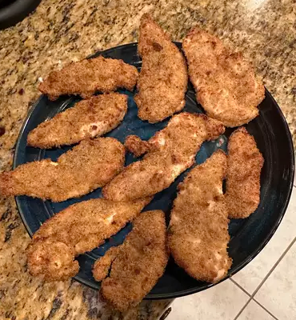

Air Fried Chicken Tenders

Description
This recipe is quick and easy for an easy choice during the week for dinner.
Since this is air fried, you get all of the deliciousness of fried chicken, with less calories!
Ingredients
- 1 large egg
- ½ cup dry bread crumbs
- 2 tablespoons vegetable oi
- 8 chicken tenderloins
Steps
- Preheat an air fryer to 350 degrees F (175 degrees C).
- Whisk egg in a small bowl. Mix bread crumbs and oil together in a second bowl until mixture becomes loose and crumbly.
- Dip each chicken tenderloin into the bowl of egg; shake off any residual egg. Dip chicken into crumb mixture, making sure it is evenly and fully covered. Lay chicken tenderloins in the air fryer basket in an even layer.
- Air-fry until no longer pink in the center, about 12 minutes. An instant-read thermometer inserted into the center should read at least 165 degrees F (74 degrees C).
Back to Odin Recipes